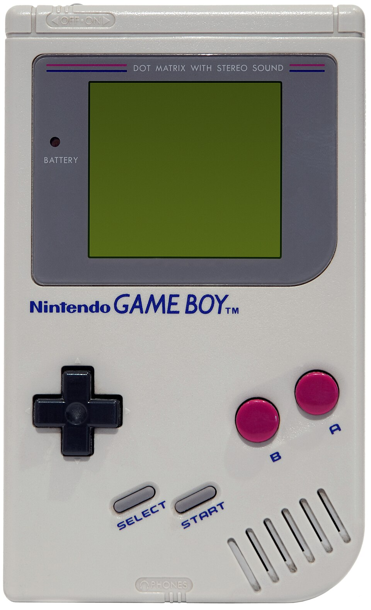
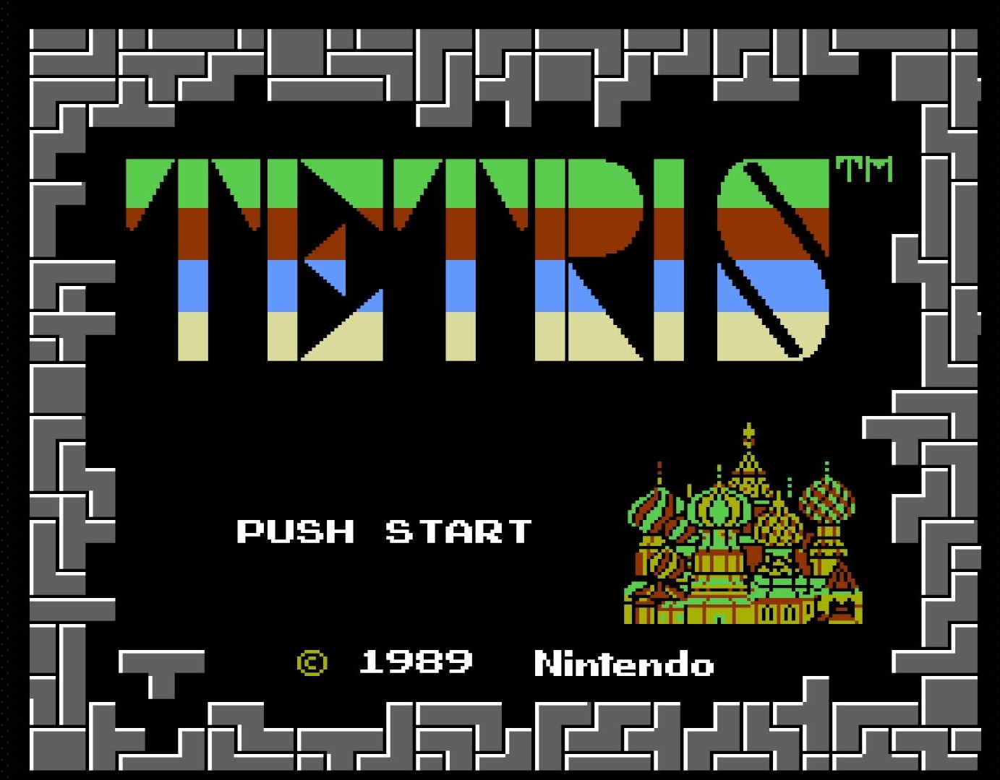

This page is my small retro-themed project about the original Nintendo Game Boy. I always thought it was cool how such an old device could still feel fun to play today. (Honestly, the graphics are super basic, but I kind of like that charm.)

The Nintendo Game Boy was released in 1989 and became one of the most iconic handheld consoles of all time. It had a monochrome screen, simple controls, and used game cartridges. Even though the graphics were very basic, the device became extremely popular because it was portable, durable, and had great battery life.
The original Game Boy used a monochrome green-ish screen that is honestly really hard to see unless you tilt it just right. But that was normal back then, and people loved it. The display was 160 by 144 pixels, which sounds tiny, but Nintendo managed to make some iconic games with it — especially Tetris, which basically sold the system all by itself.
Something I personally find interesting is how the Game Boy became a sort of “starter console” for so many players around the world. It was simple, tough enough to survive being dropped (more than once in my case), and it made handheld gaming mainstream.
Over time, Nintendo kept improving the line with Game Boy Pocket, Game Boy Color, and then eventually the Game Boy Advance. Each generation added more power, but the original chunky grey Game Boy still has this weird nostalgic vibe that even modern handhelds don't really copy.
Another cool detail is that the Game Boy wasn't just used for games. It even had a camera accessory, a printer, and link cables for multiplayer. (The camera was really low resolution, but it looked kind of creepy in a funny way.)

The Game Boy became famous largely because of Tetris, which came bundled with many units. The game was simple but addictive, and it worked perfectly with the device's limitations.
Overall, the Game Boy is a really important piece of gaming history, and I wanted to make this retro-style page to appreciate it in my own way.
If you want to talk about old handheld consoles or retro gaming in general, feel free to message me below. .